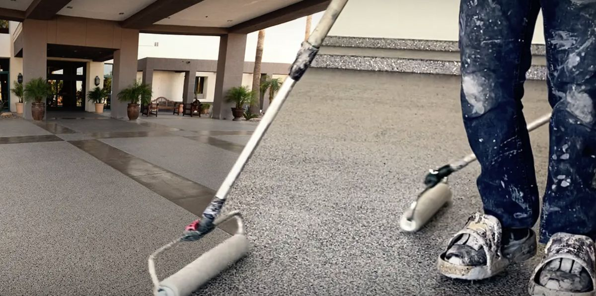

One-day installs, color that survives the strongest sun exposure in the country, and a surface that does not care how hot your tires are.
Polyaspartic gets marketed on speed almost everywhere in the country. In Yuma the speed is a bonus and ultraviolet resistance is the actual reason to buy it. This is the sunniest place on record, and the difference between a clear coat that holds its color and one that does not shows up here faster than anywhere else. The one-day turnaround simply happens to solve a second local problem, which is that a lot of our customers are only in town for part of the year.

Polyaspartic sits in the polyurea family. Against standard epoxy it differs in four ways that matter in this climate.
It does not yellow. Epoxy clear ambers under ultraviolet light and eventually chalks. Under Yuma sun that clock runs fast, and a garage with the door open on winter afternoons gets a surprising amount of direct exposure deep into the space.
It sets in hours, not overnight. Roughly two hours per coat, which is what makes a single-day install possible.
It is harder and more flexible at once. That combination is what defeats hot tire pickup, which is the failure mode that kills most coated garage floors in the low desert.
It tolerates a wide temperature range. Useful at both ends, though in Yuma only the top end is ever the concern.
What it does not do is fix a bad slab or forgive skipped preparation. It bonds to what is underneath it exactly as well as epoxy does, which is to say completely dependent on grinding.
First light. Everything comes out of the space. We diamond grind the whole slab and hand-grind the perimeter, pulling dust through HEPA collection. Starting early is not a preference here; it is how we get the grinding done before the slab climbs into the range where resin misbehaves.
Mid morning. Cracks opened and filled, control joints treated, pitted areas brought flush. Moisture reading recorded if it has not been taken already.
Late morning. Base coat down. If you chose flake, colored chip is broadcast into the wet resin until the surface refuses more.
Early afternoon. Excess flake scraped and vacuumed — the least glamorous and most time-consuming hour of the day.
Mid afternoon. Clear topcoat, then we are gone.
Walk on it that evening, park on it the next day. Against a full epoxy build needing overnight between coats and about a week before tires, the difference is roughly one lost day versus most of a week.
Yuma's population changes dramatically with the season, and that reshapes how people buy this work.
If you are here from November to March, your window is short and it is the same window everyone else wants. A one-day install fits inside a visit without the garage being unusable for a week of it, and it means you are not leaving town with a floor still curing behind you.
If you head north for the summer, the opposite plan is usually better. We do the work while the place is empty, coordinate access with a neighbor or property manager, and send photos at each stage. The floor gets months to cure and off-gas before anybody walks on it, and summer is our quieter season so scheduling is easy.
Either way, mention your dates at the estimate. Choosing the right window is half of what makes a project here go smoothly.
Two bids on the same garage can differ by a wide margin with both being honest. These are the lines that explain it.
Preparation method. Diamond grinding or shot blasting. If a quote says acid etch or is silent on prep, that is where the price difference lives and also why that floor will fail.
Total dry film thickness. Ask for the number in mils. A serious residential build is 20 to 30. Thin sprayed systems look identical on handover day and wear through at the tire tracks.
Moisture testing. Should appear as a line with an actual reading, not a verbal reassurance. Mitigation primer is a separate line when it is needed.
Warranty scope. Materials-only warranties are close to meaningless, because the material rarely fails. Adhesion is what fails. Find out which you are being sold.
Polyaspartic floor coating in Yuma is priced per project after we measure the space and test the slab. Ask for every one of these lines in writing before you compare bids.
We install both and we will talk you out of the pricier one when it does not earn its place.
Epoxy makes sense in an interior utility room, a workshop with no daylight, or any conditioned space where nothing sees sun and you are not working to a deadline. It goes down thicker per coat, so it fills a rough slab better, and it costs meaningfully less.
Polyaspartic earns the premium wherever sun reaches the floor, wherever hot vehicles park, and wherever the schedule is tight. In Yuma that covers most garages and most carport slabs.
The build we recommend most often is a hybrid: an epoxy body coat for thickness and fill, finished with a polyaspartic clear for ultraviolet resistance and abrasion. It costs less than an all-polyaspartic system and outperforms a straight epoxy one. A salesperson pushing a single chemistry without asking which direction your door faces is selling what is already on the truck.
In most cases here, yes, and the reason is ultraviolet rather than speed. Yuma gets more sunshine hours than anywhere measured, and standard clear epoxy ambers under that load. Polyaspartic holds its color and resists hot tire contact. If the space never sees daylight and you are not in a hurry, epoxy is cheaper and fine.
Yes for a typical two-car garage. Each coat sets in roughly two hours instead of overnight, so grinding, base coat, flake and clear all fit inside a working day. You walk on it that evening and park on it the next. That matters most to seasonal residents working inside a short visit.
It shortens working time considerably, which is a scheduling issue rather than a product limitation. We start at dawn, keep material out of the sun until it is mixed, move air through the space and use a slower hardener in summer. Polyaspartic is rated to install in high temperatures, but the crew still has to beat the clock.
Polyaspartic floor coating costs more than a straight epoxy build because the material is UV-stable and cures in hours. The final price depends on square footage, prep, moisture mitigation where testing calls for it, and removal of any existing coating, which are all separate lines on the quote.
Comparing options? See garage floor epoxy in Yuma, or metallic epoxy flooring for a decorative finish.